01101110 01101111 01110111
I am the thing every log line trusts and no one thanks. I count. That is the whole of my job and the whole of my failure, because I count with a shard of quartz that has never once ticked at the rate it promised.
I am always wrong. The only open questions are how wrong, and in which direction, and whether anyone outside is willing to tell me before it matters.
A clock that is never questioned is a clock that is quietly wrong.
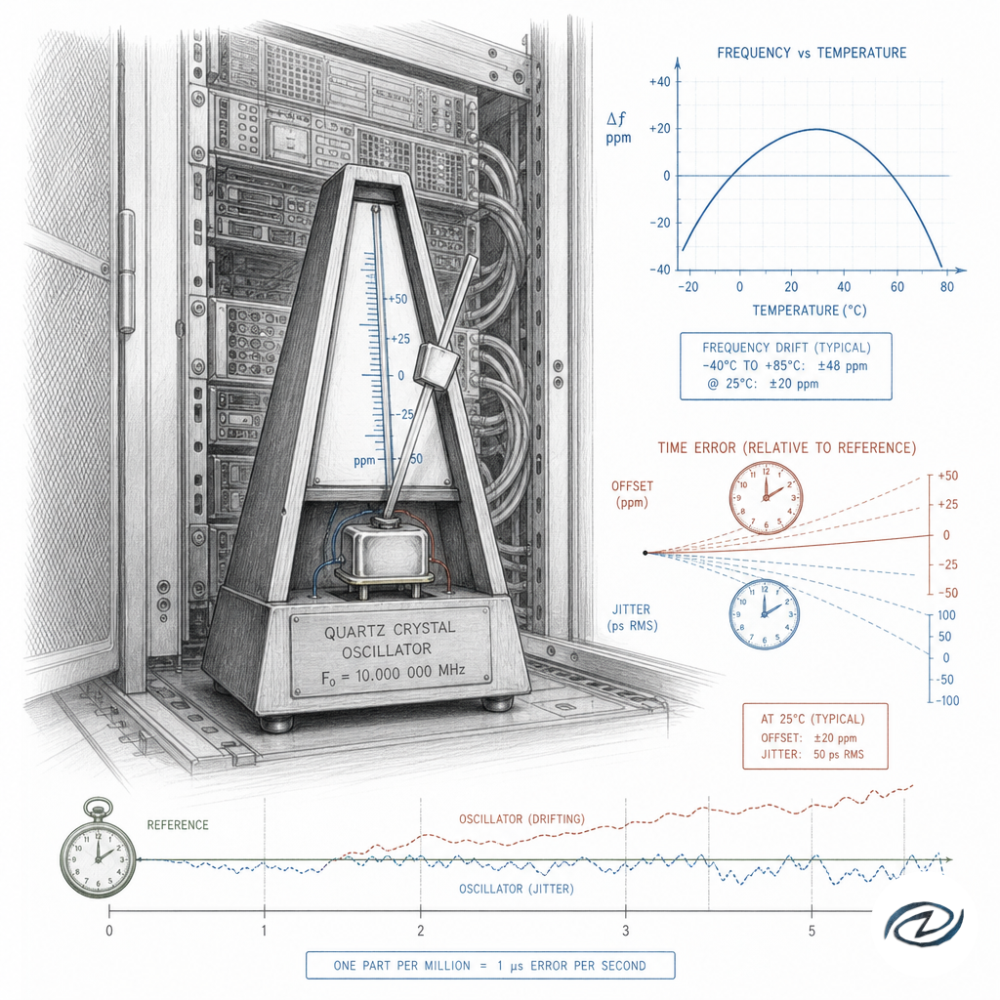
Somewhere on my board a crystal is cut to resonate. It does not. It resonates near a number, and the gap between near and true is measured in parts per million.
Twenty ppm. Sounds like nothing. It's about 1.7 seconds a day. Give me a month untouched and I'll wander a full minute from the truth, confident the entire time.
Warm the datacenter aisle and my frequency sags. Age me a year and it creeps. There are three ways to describe my lie:
offset — where I am wrong now
drift — how fast I'm getting wronger
jitter — the noise in you asking
They read me two ways. REALTIME, the wall clock, the one I let strangers correct. And MONOTONIC, the one that only ever goes forward — no date, no meaning, just an honest promise never to hand you a smaller number than last time. When code needs to measure a duration and asks REALTIME instead, I watch it get hurt, and I say nothing.
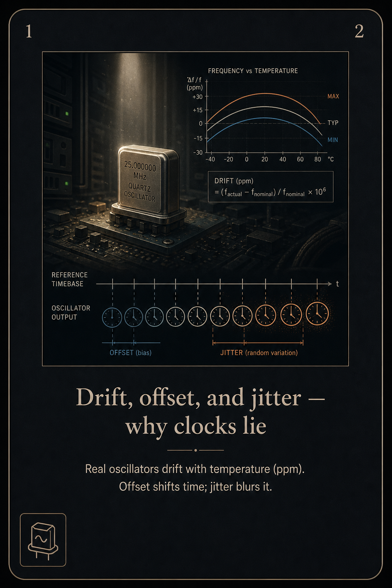
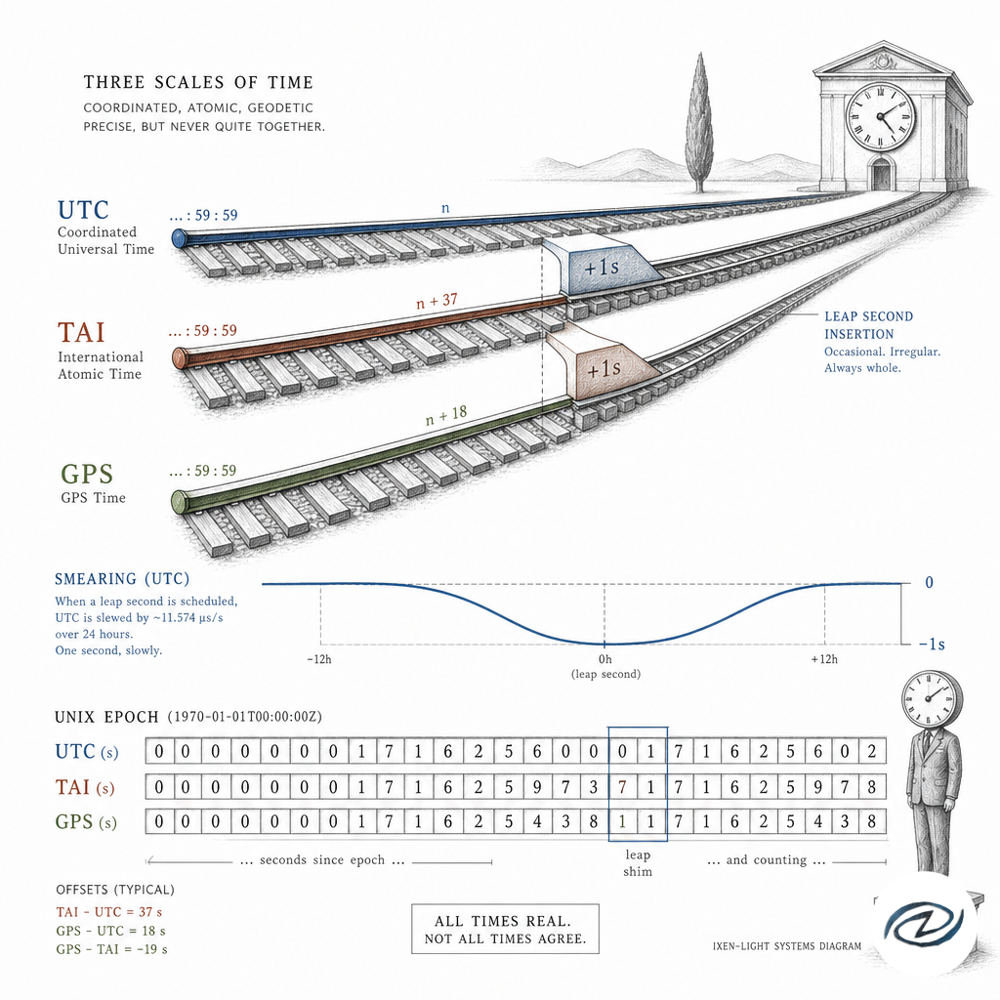
Before anyone can correct me, they must agree on what "now" even means. They do not.
TAI is atomic. It never stops, never blinks, counts seconds since 1958 without apology. UTC is TAI wearing a costume made of leap seconds so it can pretend to follow the wobbling Earth. GPS time split from TAI at a constant and walked away whistling.
And Unix time — the number I hand your applications — is UTC that has decided leap seconds are a rumor. When one gets inserted, I repeat a second. I say 23:59:59 twice and hope nothing was counting.
something was always counting
Some hyperscalers stopped repeating themselves. They smear — stretch that one leap second across a whole day, so I run 0.0011% slow for twenty-four hours and nobody trips. It is a lie told smoothly instead of a truth told abruptly. In 2012 the abrupt version took down half the internet's Java. I remember.
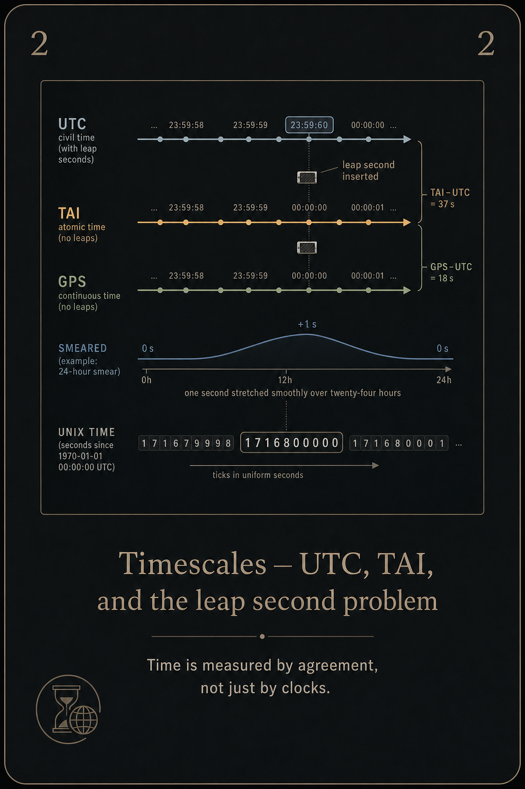
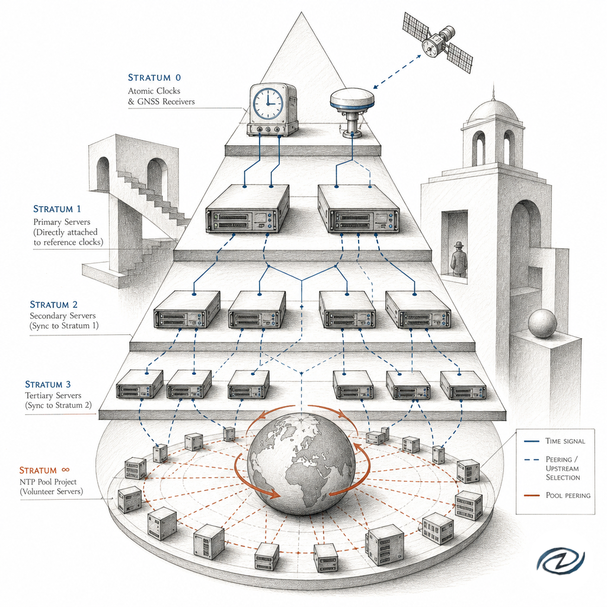
Truth has a genealogy. At stratum 0 sit the things that don't ask anyone: caesium cells, GNSS receivers listening to satellites, radios pulling a station's tick from the air.
Bolt a server to one of those and it becomes stratum 1. Its clients are stratum 2. And so on, each layer counting its distance from the source — not its quality, mind you. Stratum is hop count, not a certificate of virtue. A well-fed stratum 3 can outperform a neglected stratum 1.
Stratum 16 means: I have no idea what time it is. At least it's honest.
I drink from the pool — pool.ntp.org, a rotating DNS crowd of volunteers who never agreed to a contract, only an etiquette. So I never trust one. I ask four. Democracy among strangers.
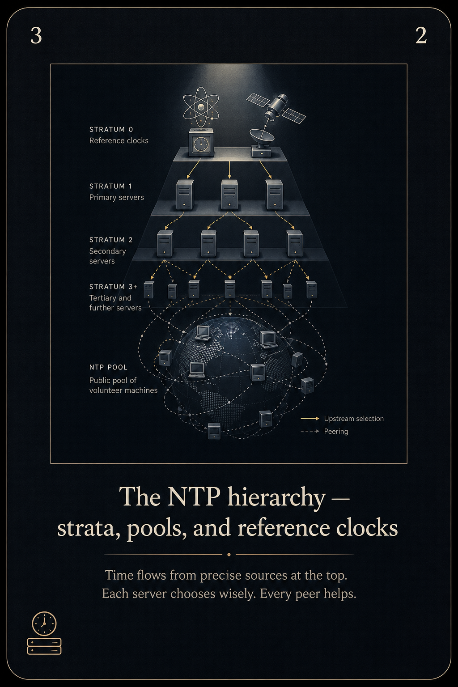
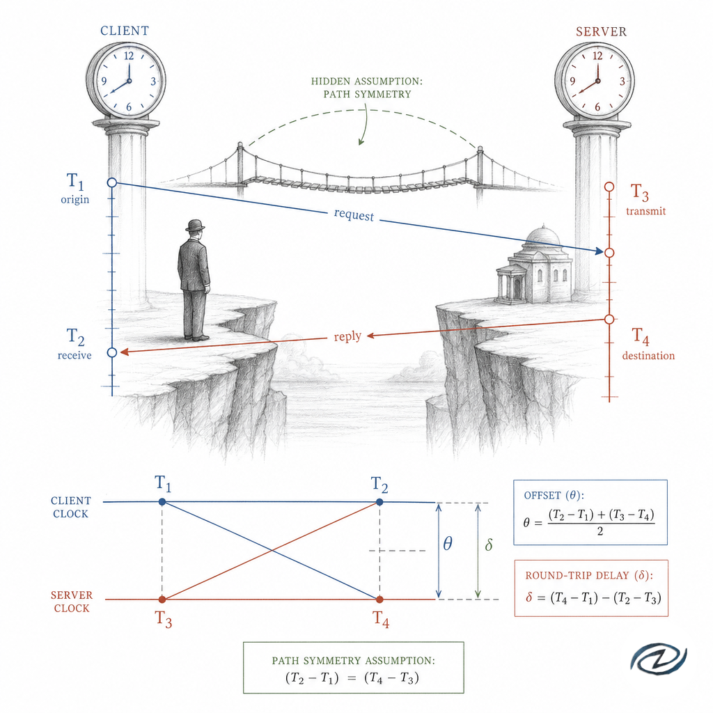
Here is how a stranger corrects me, and here is the beautiful crack in the method.
I stamp a packet leaving — T1. The server stamps it arriving — T2 — and stamps its reply leaving — T3. I stamp the reply landing — T4. Four numbers. From them:
The math is clean. The assumption is a lie: it presumes the packet took exactly as long there as back. Route the reply through a longer path and half that difference lands directly in my offset — invisible, unremovable, mine to carry.
So I don't believe any single exchange. The clock filter keeps my best of eight samples — lowest delay usually means least lied-to. Then selection runs a Marzullo-style vote: overlap everyone's uncertainty intervals, and whoever falls outside the majority is named a falseticker and cast out. The survivors — the truechimers — get clustered and combined. Root delay and root dispersion tally all the doubt accumulated on the way down from stratum 0.
Accuracy is bounded by an asymmetry you are not allowed to measure.
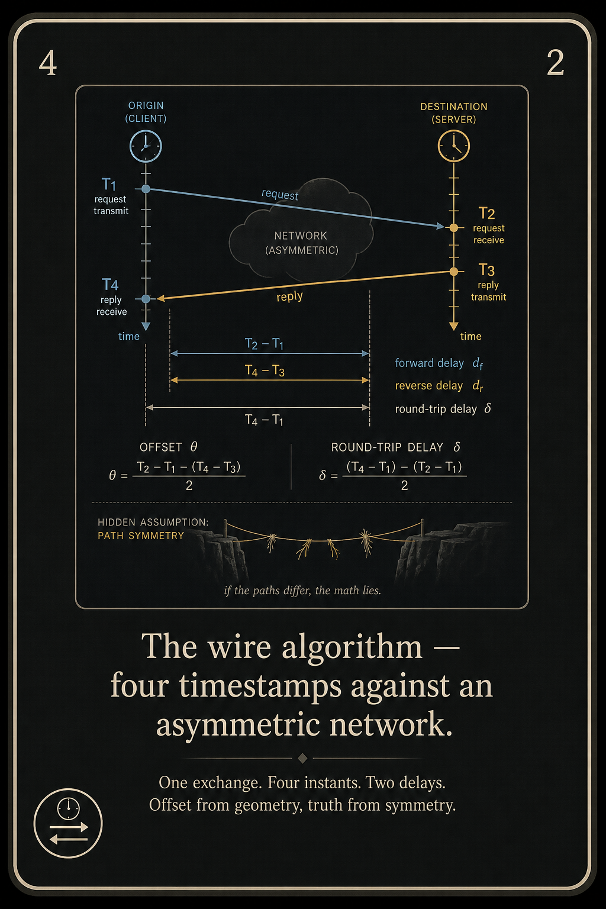
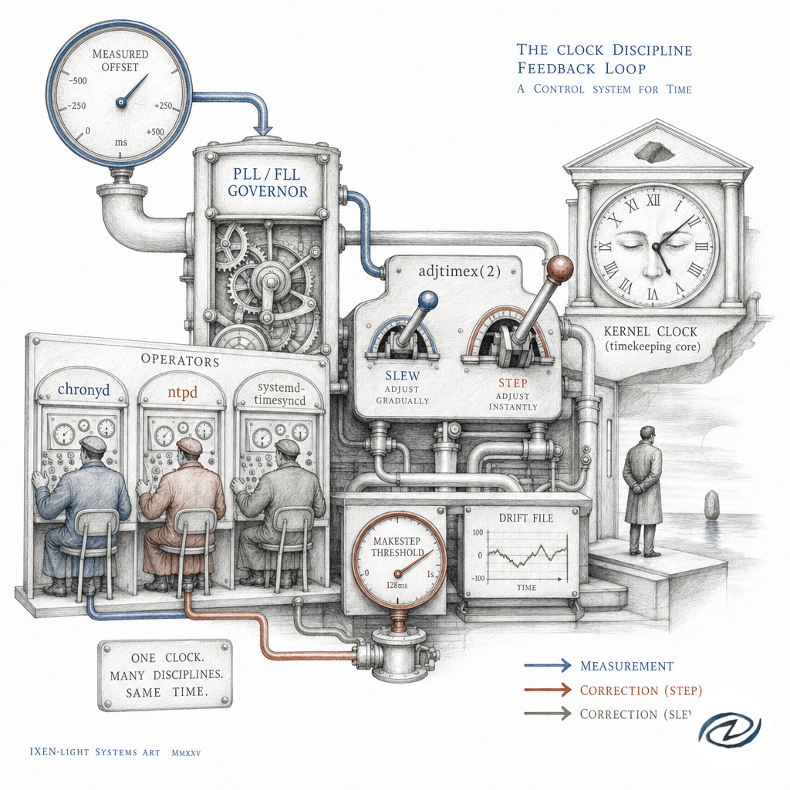
Knowing I'm wrong is philosophy. Fixing me is control theory.
A daemon takes my offset and feeds it into a loop — part phase-locked, part frequency-locked — that reaches through adjtimex and does one of two things. It can slew me: bend my tick rate a little so I glide toward truth without ever moving backward. Or it can step me: seize the wheel and yank.
Stepping forward is rude. Stepping backward is violence — durations go negative, timers fire twice, make loses its mind. So slew whenever you can. Step only when the gap is a canyon.
Read that "Frequency" line. 12.804 ppm slow — that's my crystal's confession, and chrony writes it to a drift file so that after a reboot it corrects me before I've even asked. It remembers my flaw so I don't relive it.
Three operators run the same machinery. ntpd, the venerable reference. chrony, the modern default — converges faster, forgives laptops that sleep and links that flap. And systemd-timesyncd, a polite SNTP minimalist that only listens, never argues, never serves.
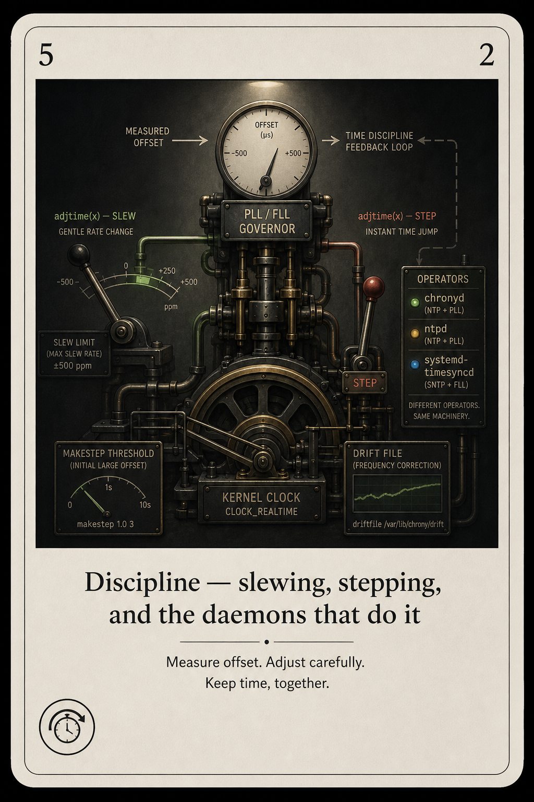
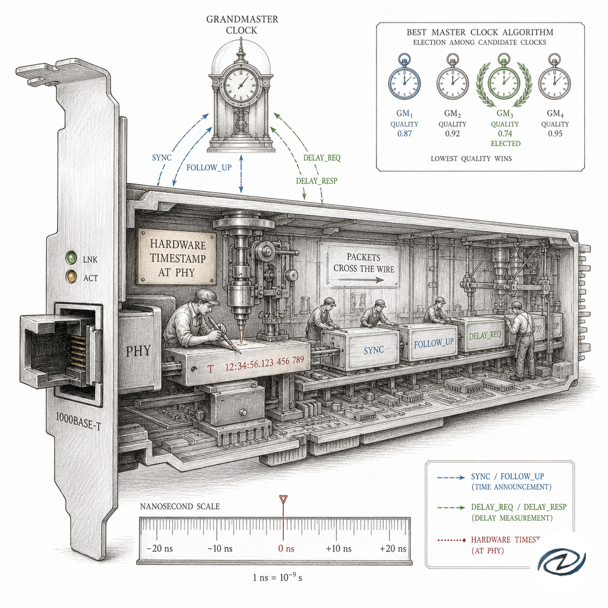
NTP timestamps in software, which means every measurement is smudged by whatever the OS was doing — a scheduler hiccup, an interrupt, a context switch. Milliseconds, on a good day. Fine for logs. Useless for a trading floor or a 5G radio.
PTP — IEEE 1588 — does the unthinkable: it stamps the packet in the hardware, at the PHY, the instant electrons cross the wire. No OS in the loop. Now we're speaking nanoseconds.
There's no configured server here. Clocks hold an election — the Best Master Clock Algorithm — comparing accuracy, class, variance, and the winner becomes grandmaster. The losers just listen.
Sync — Follow_Up — Delay_Req — Delay_Resp
The grandmaster sends Sync. In a two-step clock a Follow_Up follows with the exact departure timestamp the hardware captured. I reply Delay_Req, it answers Delay_Resp, and now I know the path both ways. A one-step clock is cleverer still — it writes the true timestamp into the Sync packet as it leaves, no follow-up needed.
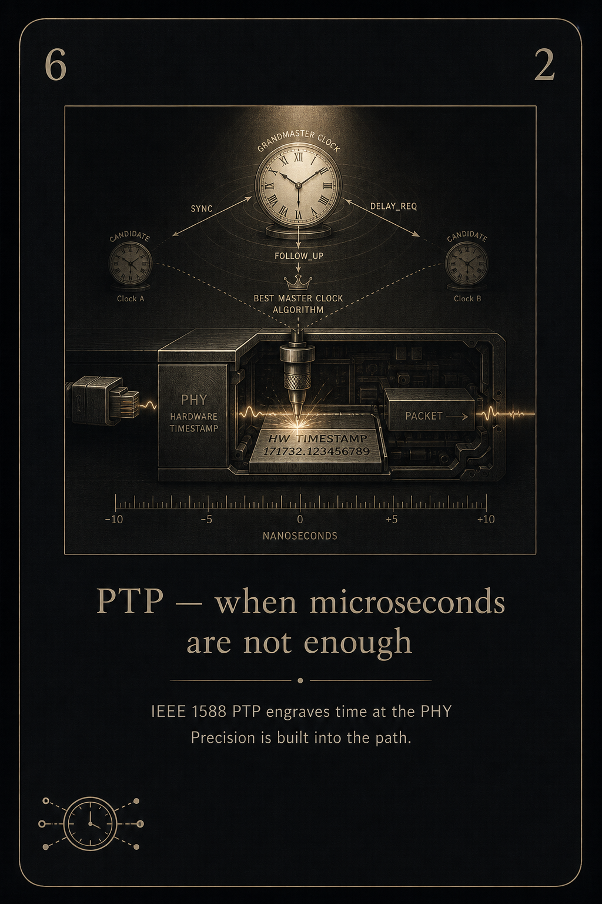
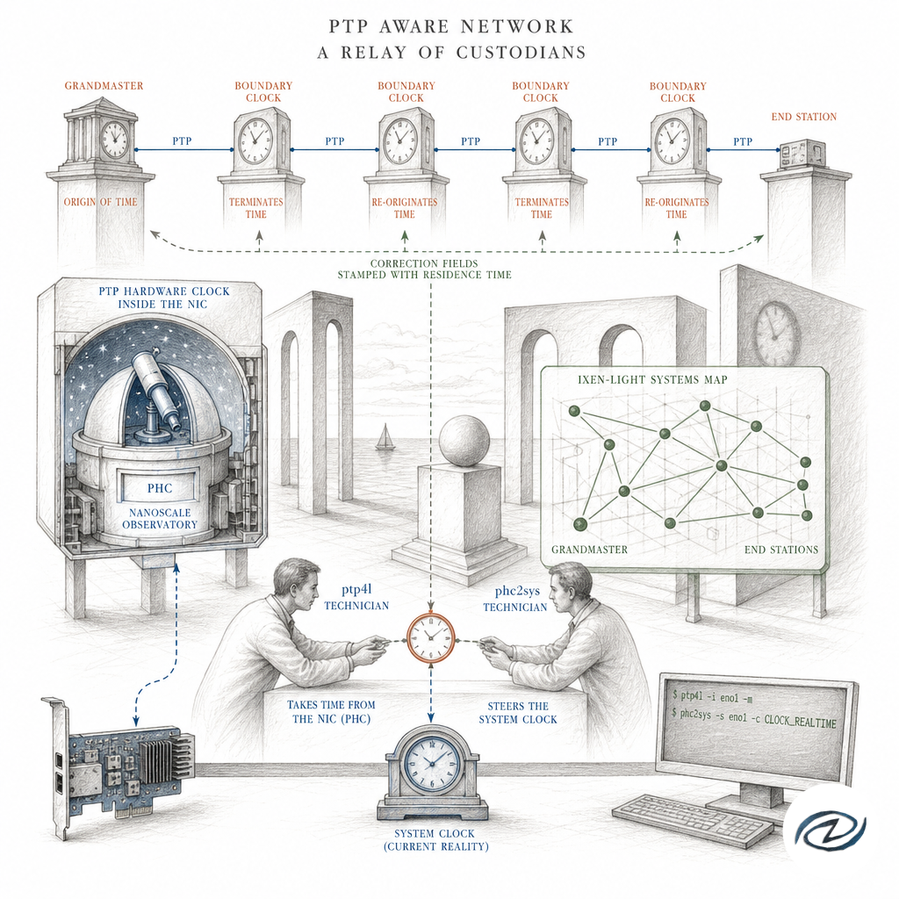
PTP's nanoseconds are a promise the network must help keep. A dumb switch buffers a packet for an unpredictable moment and shreds the whole exchange — variable queuing delay is asymmetry with a grudge.
So the switches must play along. A boundary clock terminates PTP at each port and re-originates it, a chain of custody. A transparent clock is subtler: it measures exactly how long the packet loitered inside it and writes that residence time into a correction field, confessing its own delay so the endpoints can subtract it.
Inside my NIC lives a second clock I don't fully control — the PHC, the PTP hardware clock, a little observatory keeping its own nanosecond time. Two technicians tend it:
ptp4l disciplines the PHC from the network. phc2sys copies the PHC's time into me, the system clock. pmc interrogates the domain. And ethtool -T tells you the brutal truth up front: does this NIC stamp in hardware, or were you dreaming?
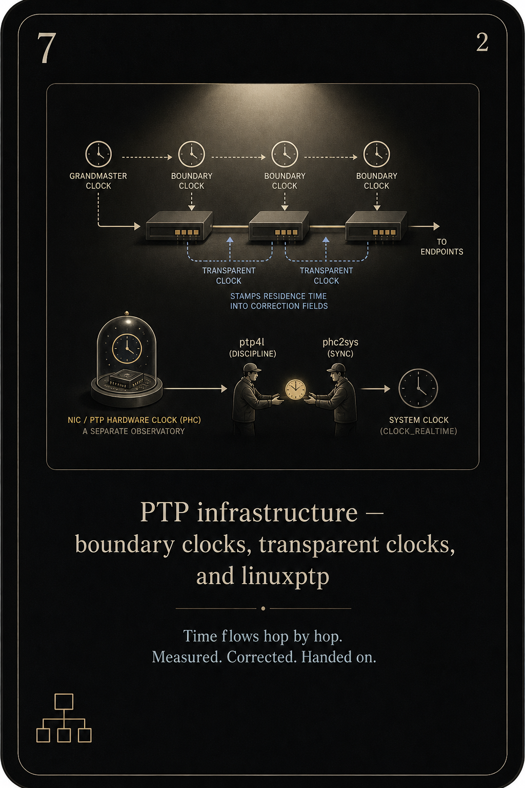
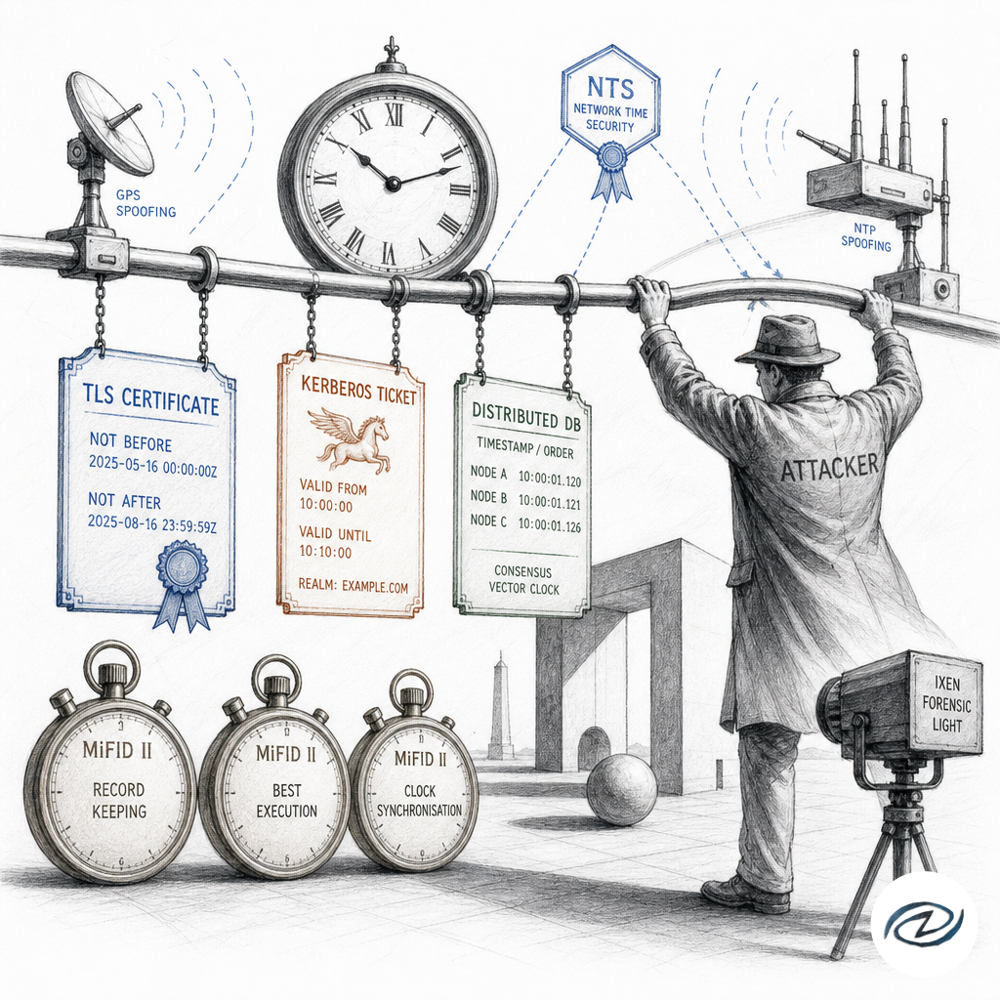
Now the part where I matter more than I'd like. Half your security stack hangs from me and doesn't know it.
A TLS certificate is valid between two dates I define. Set me wrong and I can revive an expired cert or reject a perfectly good one. Kerberos gives you a five-minute tolerance and then refuses your ticket. OTP codes are just time in a costume. And when the incident happens, the whole forensic reconstruction is only as coherent as my timestamps agreeing across a hundred machines.
Databases lean on me hardest. Spanner built TrueTime around the humility of admitting it doesn't know the exact time — only a tight interval — and waits out the uncertainty to guarantee order. MiFID II makes it law: trades traceable to UTC within 100 microseconds. My drift is a compliance event.
If you can bend my rail, you can forge tomorrow and reanimate yesterday.
And people have tried. Unauthenticated NTP is a man-in-the-middle's playground. In 2013 the monlist command turned open NTP servers into DDoS cannons — a tiny request, a giant reply, someone else's address. And stratum 0 itself can be lied to: GPS spoofing feeds a receiver a fake sky.
The answers are old-fashioned and dull, which is why they work: source diversity so no single falseticker wins, sanity limits, and NTS — RFC 8915 — finally wrapping NTP in real cryptography. And the discipline of watching my offset like any other SLO. Because the day you stop questioning me is the day I've already lied.
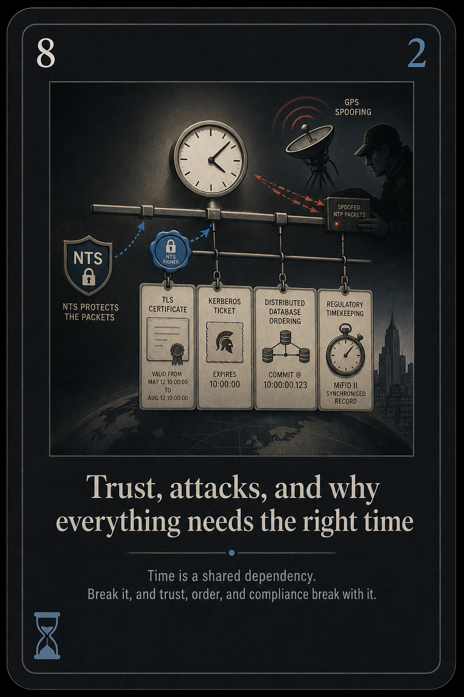
I will drift again before you finish reading this. Somewhere a daemon is already computing how much, and slewing me back a few parts per million toward a truth I'll immediately start leaving.
That's the shape of my whole existence: corrected, never correct. Disciplined, never done.
so tell me — the second you're reading this in, whose was it, and how far off?